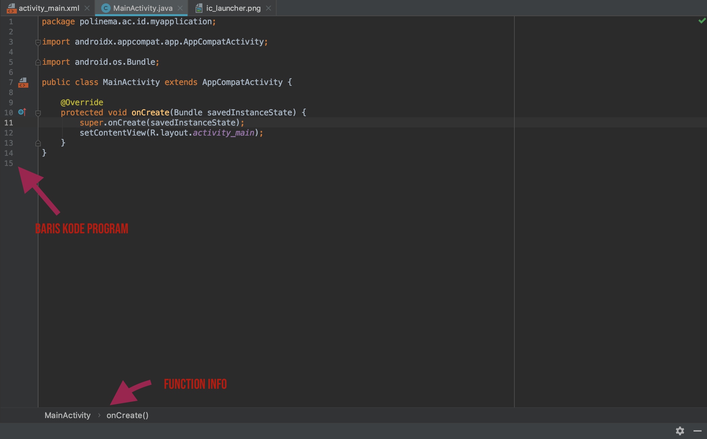

Tour Android Studio
Pada sub bab ini anda akan mempelajari mengenai cara menggunakan android studio dengan baik, seperti shortcut, generator, dan layout layout penting pada Android Studio.
Layout
Tampilan layout android studio dapat berubah ubah sesuai dengan file yang sedang kita buka. Pada umumnya ada tiga jenis file yang akan sering dibuka ketika membuat sebuah aplikasi android yaitu gambar, java, dan xml.
Layout file gambar
Berikut ini layout editor android ketika anda membuka sebuah file gambar.

Layout file java
Berikut ini layout editor android ketika anda membuka sebuah file java.

Layout file xml
Berikut ini layout editor android ketika anda membuka sebuah file layout xml.

Shortcut
Berikut ini daftar shorcut yang sering digunakan pada saat membuat program android pada android studio.
Pencarian
Shift + Shift- Search Every WhereCtrl + F- Find Text with in a Single FileCtrl + Shift + F- Find Text in All FilesCtrl + R- Replace Selected Text in a Single FileCtrl + Shift + R- Replace Selected Text in all Files (Be Careful while Using This)Ctrl + Shift + A- Search for IDE Commands
Navigasi
Ctrl + N- Navigate to ClassCtrl + Shift + N- Navigate to a FileCtrl + B- Jump to DeclareationsAlt + ↑- Jump to Previous MethodAlt + ↓- Jump to Next MethodCtrl + G- Jump to LineCtrl + E- Recent FilesCtrl + Shift + Back Space- Jump to Last Edited LocationCtrl + B- Find DeclarationsCtrl + Left Mouse(or)Ctrl + Alt + F7- Show UsageAlt + F7orCtrl + F7- Find usages /Find usages in fileCtrl + Shift + B- Find ImplementationsF3- Find NextShift + F3- Find Previous
Editing
Ctrl + F6- Refractor CodeCtrl + D- Duplicate a Line/Selected partCtrl + Y- Delete a Line/Selected partCtrl + Q- Quick DocumentationCtrl + Space- Code completionCtrl + Shift + Space- Smart code completion (by expected type removes unrelated suggestions)Alt + Insert- Generate CodeCtrl + J- Insert Live templateCtrl + O- Override methodsCtrl + I- Implement methodsCtrl + Alt + T- Surround with…Ctrl + /- Comment / uncomment with line commentCtrl + Shift + /- Comment / uncomment with block commentCtrl + Alt + L- Reformat code